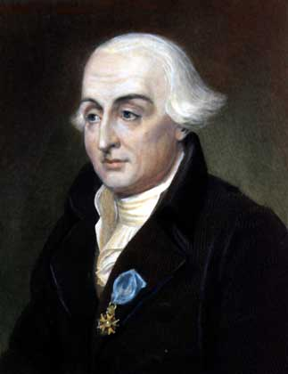

Троянские астероиды — группы астероидов, находящихся в окрестностях точек Лагранжа L4 и L5, и, следовательно, в орбитальном резонансе 1:1 любых планет или их спутников.
Впервые астероиды такого типа были обнаружены у Юпитера. Эти астероиды называют по именам персонажей Троянской войны, описанных в Илиаде.
Кроме троянцев Юпитера известны троянцы у других планет: 9 у Марса, 28 у Нептуна, по одному у Урана и у Земли. Известен также временный троянский спутник у Венеры. Кроме того, два спутника Сатурна — Тефия и Диона — в свою очередь имеют по два троянских спутника.
К февралю 2020 в Солнечной системе открыто 7681 таких астероидов, из которых 7642 — на орбите Юпитера.
NASA планирует исследовать троянцев с помощью АМС Люси (название — по самке австралопитека Люси), которую планируется запустить в октябре 2021 года. Пролёт через главный пояс астероидов намечен на 2025 год. С 2027 года по 2033 год «Люси» исследует 6 троянских астероидов Юпитера. Миссию планируется вооружить новыми версиями инструментов Ralph и LORRI, использовавшихся в аппарате «Новые горизонты» при исследовании Плутона, и учесть опыт работы прибора OTES из начавшейся миссии к околоземному астероиду (101955) Бенну «OSIRIS-REx».
Точки Лагранжа
В 1772 году Жозеф Луи Лагранж, исследуя ограниченную задачу трёх тел, открыл пять точек, в которых тело может при определённых условиях оставаться неподвижным в системе отсчета, которая вращается вместе с двумя другими телами (т.е. в которой они неподвижны). Эти точки были названы точками Лагранжа, и две из них оказались точками устойчивого равновесия: L4 и L5. Таким образом, была предсказана возможность нахождения в этих точках маломассивных объектов.
Эта гипотеза была подтверждена на практике в 1906 году, когда немецкий астроном Макс Вольф открыл астероид (588) Ахиллес. Сложилась традиция называть такие астероиды именами героев Троянской войны, а сам класс объектов — троянскими астероидами. В точке L4 объекты стали называть в честь греков, а в L5 — в честь защитников Трои, но есть и два исключения: (617) Патрокл находится в лагере троянцев, а (624) Гектор — в лагере греков.
А вот и сам Жозеф Луи
Троянские астероиды Юпитера — это две крупные группы астероидов, движущихся вокруг Солнца почти в окрестностях точек Лагранжа L4 и L5 Юпитера в орбитальном резонансе 1:1. Эти астероиды называют по именам персонажей Троянской войны, описанных в Илиаде.«Ахейский лагерь» (или «Греки»): (588) Ахиллес, (624) Гектор, (659) Нестор, (911) Агамемнон, (1143) Одиссей, (1404) Аякс, (1437) Диомед, (1583) Антилох, (1647) Менелай и др. Опережают Юпитер на 60°. «Троянский лагерь» (или собственно «Троянцы»): (617) Патрокл, (884) Приам, (1172) Эней, (12649) Асканий, (1173) Анхис, (1208) Троил и др. — отстают на 60°.
По состоянию на февраль 2020 в обеих группах у Юпитера обнаружено 6178 таких астероидов, причём греков в L4 почти в два раза больше, чем троянцев в L5.
Даже сторону можно выбрать
К ноябрю 2016 известно семнадцать астероидов данной группы, тринадцать из которых находятся вблизи точки Лагранжа L4, которая лежит в 60° впереди планеты на расстоянии около 5 млрд км от Нептуна и четыре около точки L5.
Впервые астероид этой группы был обнаружен в 2001 году во время проведения программы «Глубокий обзор эклиптики», организованной NASA, но выделить их в отдельную группу астероидов удалось лишь в 2003 году. Большую важность для астрономов имело открытие астероида 2005 TN53, сделанное в 2005 году. Особенность этого астероида состоит в том, что он имеет очень большой (более 25°) наклон орбиты к эклиптике, что может свидетельствовать о довольно большой группировке астероидов в этой области, ведь многие троянские астероиды Юпитера имеют наклон и вовсе до 40°. Астрономы считают, что количество крупных троянских астероидов из группы Нептуна, размеры которых в среднем около 100 км, будет на порядок превышать число троянских астероидов из группы Юпитера.
Ещё два астероида 2005 TN74 и 2007 RW10 первоначально при открытии были отнесены к данной группе астероидов, но впоследствии были исключены из неё.
В 2010 году «Центр малых планет» сообщил об открытии первого троянского астероида Нептуна в точке L5, им оказался астероид 2008 LC18. Выявить астероиды вблизи точки L5 очень сложно, так как в настоящее время вид на область этой точки близок к яркой окрестности центра нашей галактики Млечный Путь, где находится очень большое количество звёзд, в связи с чем открытие слабых неярких объектов в этой области сильно затруднено.
29 апреля 2011 года был открыт астероид 2011 HM102, который оказался, троянским астероидом Нептуна. Это третий троянский астероид Нептуна принадлежащий отстающей от планеты на 60° точке Лагранжа L5.
Движение астероидов вокруг Нептуна
2010 TK7, первый троянский астероид Земли, был обнаружен в 2010 году с помощью инфракрасного космического телескопа WISE. Это небольшой объект, его диаметр — около 300 метров. Он обращается вокруг точки L4, выходя из плоскости эклиптики. Несмотря на активный поиск, других троянских астероидов пока не обнаружено (например, в 2017 году вблизи L4 и L5 проходили космические аппараты OSIRIS-REx и Хаябуса-2, соответственно, которые не обнаружили никаких других объектов). И, как всегда, подробнее ниже: